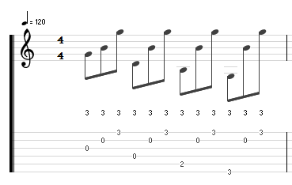

GROWL
I'd rather be playing guitar
 EN
EN
You can find a score for this piece here and this is my performance:
It doesn't have tab attached regrettably. I read sheet music SLOWLY for guitar because I trip up still with all the fingering options.
I work always off both the stave AND tablature. If I start with only the score then I tab it out beneath. It is a good exercise anyway and I
highly encourage regular transcription and score writing. To write TAB I can't recommend enough the free application Tuxguitar.
Although this piece was written in the score as a 4/4 with bars composed of a pair of triplets, I essentially looked at it as a 6/4. As long as you achieve the pulse feel of two sets per bar, all is good. There isn't a great deal of syncopation and the steady rhythm is the heart of this piece. It is meditative and written as moderato so we are in 110 bpm territory max. Other recordings I have heard seem to favour a faster tempo than I used myself. I liked holding bass notes a touch longer as the voicing of chords is very open here and we get all the benefits of hearing a rich acoustic instrument.
TROUBLE?
Overall I didn't find this piece difficult. It has been a while since I tried to get things perfect in realtime. Most of my effort these days is on composition. I don't perform any more. The sources of my errors were just lack of dexterity for the most part and issues with sensible finger placement. I've a great book called "Pumping Nylon" that stresses the importance of hand condition. Playing this piece has made me think about that and how the only tension in your left hand should be on notes you are playing. The moment a note's duration ends the fretting finger should lose its tension.
There are a couple of barre sections in this piece that I stuffed up. I don't always use a barre but this means I am quickly fingering notes. I don't mind so much as I've put quite a bit of effort into shred in my life. Quick playing CAN however lead to inconsistency in the way I finger a phrase, fixable maybe with lots of practice, but easier just to use a barre. If I wasn't stubborn, I would have just nailed the barre!
Finally the most obvious error in practice was this little section:
This error is more about right hand technique than left. The descending bass should probably be played with the thumb. I was doing this but being thrown as the spacing between my thumb and other picking fingers changed as the voicing spread out. This tells me I need to hit both picking exercises AND string skipping exercises!
ALWAYS PLAY WITH FULL ATTENTION AND RELAX
This is my new mantra and this piece has taught me it well. On the surface maybe it looks like simple advice but when you think about it, these two things are opposed. Full attention and relaxation; one stresses and focusses you, the other zones you out. They are opposed! So what is the problem here? Do I need to get less stressed by paying attention or do I need to zone out less when I relax. Or is this just the general state of performing, the fine line between allowing yourself enough space to be expressive but focussing yourself enough to avoid error and technical deviance? A question for another article.
So what do I mean by full attention? Here's a little list:
- - Observe your finger position like a hawk
- - Think about the tension in your left hand
- - Mindfully position your right arm and palm for smooth picking
- - Tap your foot to keep time
- - Look ahead in the music as you play, don't just recite
Mastering these abilities whilst staying relaxed and unhurried is going to lead to a good performance and useful practice. An obvious way to reduce the stress is to practice a lot. Then you won't have hand positions and awkward phrases thrust upon you with little preparation. BUT, have you ever noticed that sometimes your first attack of a piece can sometimes sound better? I have. Honestly, I think that might be because your expectations are lower, there's less pressure. That's going to be something I research going forward.